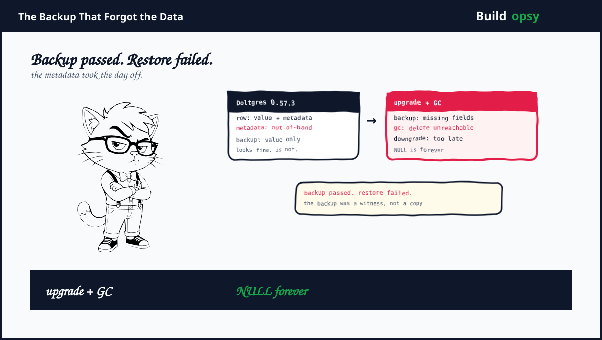

1. The Backup Completed. That Was the Problem.
In August a Doltgres customer upgraded from 0.57.3 to 1.2.0. Before the upgrade they used the hosted web interface to create a backup. The upgrade finished. SELECT queries then failed on some tables. Engineers repaired the database structure enough for queries to run, but missing values had already been replaced with NULL. Some smaller tables lost every affected value in at least one column.
The customer tried a downgrade. It did not restore the data. They restored the backup. It reproduced the same damage. That second result is the one database teams fear. A bad live copy is painful. A bad backup means the recovery path is decorative.
2. The Hidden Metadata Bug
Doltgres supports adaptively encoded values. Some larger values use out-of-band storage plus bookkeeping that tells the engine where the value lives. The logical row still looks normal to a query. The physical representation is split between the row and a side structure.
The bug wrote tuples without the required out-of-band metadata in releases from the adaptive encoding change through 0.56.3. Data movement and garbage collection were introduced later. Testing missed the interaction because the original bug existed before the operations that would expose it.
This is a classic temporal failure. Feature A ships in isolation. Feature B ships later. Feature C makes cleanup automatic. The system never tests A plus B plus C against a real upgrade path. Years later the combination meets a customer who upgrades at exactly the wrong moment. The code did not suddenly become wrong. The assumptions finally met.
The sequence was roughly:
- Old releases write values whose metadata is incomplete.
- The customer creates a backup through the normal interface.
- The backup moves rows but does not preserve every out-of-band value.
- The customer upgrades to 1.2.0.
- Automatic garbage collection sees metadata it cannot reach.
- GC deletes the orphaned values permanently.
- Downgrade and restore return the same incomplete state.
The math is simple. Let R be the set of logical rows and M the set of metadata objects needed to decode them. A valid backup must preserve both R and every m in M referenced by R. This system effectively checked that R existed while allowing M to be incomplete. Garbage collection then computed reachability over the incomplete graph and correctly deleted objects that the backup had failed to reference. The collector was not irrational. It was operating on a lie.
If 1 percent of a million stored values depend on missing metadata, 10,000 values are at risk. If a smaller table has 500 rows and every row uses the affected encoding, a single column can become 100 percent damaged while the whole database looks mostly healthy. Aggregate health dashboards are excellent at hiding small tables with large feelings.
4. What Went Wrong in the Design
Backup tested transport, not restore. A backup endpoint returned success without proving that a fresh instance could read every value. The contract was “copy finished” instead of “restore preserves logical data.”
Garbage collection trusted reachability. GC treated missing metadata as unreachable data. For a versioned database, unknown reachability should be a stop condition. Delete only what the engine can prove is dead.
Upgrade logic allowed destructive work too early. The new release ran automatic GC before an integrity scan established that old data had migrated correctly. Upgrade should be boring. It should also be allowed to refuse service until the data passes inspection.
Representation changes lacked historical fixtures. Tests covered current writes. They did not cover values created by every older encoder followed by backup, clone, GC and restore. Storage formats remember your shortcuts longer than your team does.
5. What Should Happen Instead
First, make backup verification logical. After every backup, restore it into an isolated instance and run a table and column inventory. Compare row counts, null counts, checksums and sampled value hashes against the source. For adaptive encoding, explicitly scan side stores and verify every pointer resolves.
Second, turn uncertainty into a safe failure. If GC encounters an object whose reachability cannot be established because metadata is malformed or missing, quarantine it. Do not delete it. Storage is cheaper than an apology written after NULL has replaced a customer value.
Third, make upgrades run a preflight. Scan all rows written by affected releases. Refuse startup if corruption is found. Offer an administrative rewrite tool that materializes values into the new safe representation before any GC runs. The database should be annoying before it is destructive.
Fourth, keep an independent backup path. A logical backup routine that shares the same encoding library is not independent enough to catch an encoding bug. Pair it with a storage snapshot or a raw object copy. Recovery needs a copy that did not share the same assumptions.
Fifth, retain rollback versions that were actually deployed to the customer. A selector with the five newest releases is not rollback safety if the customer was running a version outside that window. Rollback means returning to the last known-good state, not choosing a version from a dropdown.
6. The Verdict
Doltgres owned the failure clearly. The bug was old metadata, the blast radius was narrow and the recovery path still failed because the backup carried the same omission. The lesson is bigger than Doltgres. Modern databases are graphs of rows, indexes, blobs, manifests, tombstones and encoding metadata. A backup that copies only the obvious rows is a screenshot of the database, not the database.
The correct design is conservative. Verify logical restoration. Refuse to start on known damage. Quarantine unknown reachability. Keep an independent copy. Make GC prove death before it acts. These are not glamorous features. Neither is explaining to a customer why their backup successfully preserved the shape of data while losing the data itself.
Backup passed. Restore failed. The database believed the backup. The customer paid for the belief.
Sources and Method
This postmortem follows DoltHub's public incident report. The graph model and safety recommendations are an engineering interpretation of the published failure path.